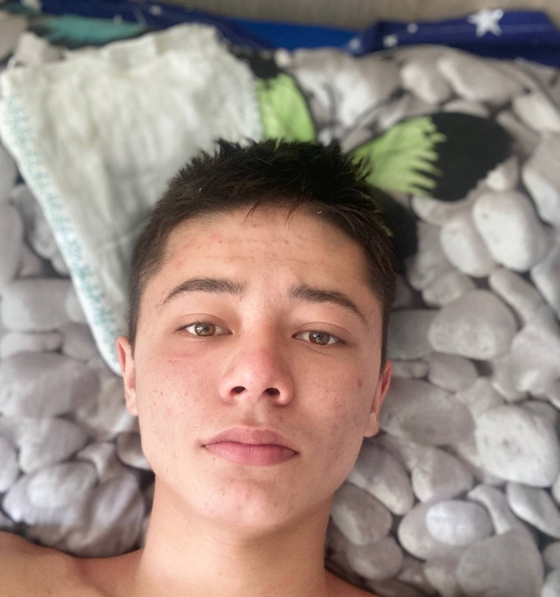

ABDULLOH TOHIROV
Farg'onadanman, Toshkentda dasturiy injiniring bo'yicha o'qiyman. INTJ-T xarakter: ortiqcha balandparvoz gaplarsiz, sovuqqon mantiq, tizimli fikrlash va doimiy takomillashish. Noor macOS agenti va Noor AI tarjimon botini sun'iy intellektni boshqarib (AI-Assisted Architecture) birgalikda yaratganman.
Noor — Desktop AI Agent (Voice & OS Control)
Sun'iy intellekt vositalari yordamida to'liq arxitekturasi ishlab chiqilgan, macOS tizimi uchun ovozli va kompyuterni mustaqil boshqara oladigan Desktop AI agenti. Vosk lokal uyg'onish modeli («Nur»), o'zbekcha nutq (Edge-TTS), foydalanuvchi ovozini biometrik tanish (Speaker ID), Accessibility Tree orqali tizimni boshqarish, Vision OCR vizual xotirasi va Sokratik tahlil tizimi bilan qurollantirilgan.
Noor AI — Tarjimon Bot
Sun'iy intellekt imkoniyatlarini amaliyotga tatbiq etish natijasida yaratilgan aqlli Telegram tarjimon boti. So'zma-so'z emas, kontekstni va ma'no nozikliklarini to'g'ri anglagan holda tez va aniq tarjima qilib beradi.
INTJ-T: Sovuqqon Mantiq va Tizimli Fikrlash
INTJ-T (Turbulent Architect) sifatida quruq hissiyotlar yoki balandparvoz gaplarni yoqtirmayman. Har bir g'oya avval tahlil qilinadi, aniq tizimga solinadi va faqat samara beradigan usullar bilan amalga oshiriladi.
AI — Kodlovchi va Kuchaytirgich
Loyihalarimni sun'iy intellekt vositalari bilan birgalikda yaratganman. Men uchun dasturlash — yillab sintaksis yodlash emas, balki to'g'ri arxitekturani o'ylab, AI'ga to'g'ri yo'l ko'rsatish orqali murakkab mahsulotlarni tez chiqarishdir.
Farg'onadan Toshkentga
Farg'onadan poytaxtga kelib, Toshkentda Dasturiy Injiniring bo'yicha ta'lim olyapman. Quruq nazariyaga vaqt yo'qotmay, to'g'ridan-to'g'ri ishlaydigan amaliy loyihalarga diqqatimni qaratganman.
COORD: 40.3842° N (FRG) ➔ 41.2995° N (TAS)
Doimiy Takomillashish (Perfectionism)
Turbulent (-T) xususiyatim sababli erishilgan natija bilan cheklanib qolmayman. Har bir loyiha va tizimni yanada tezroq, xavfsizroq va qulayroq qilish ustida doimiy ishlayman.
Quyidagi buyruqlarni bosing yoki matn yozib ENTER bosing.